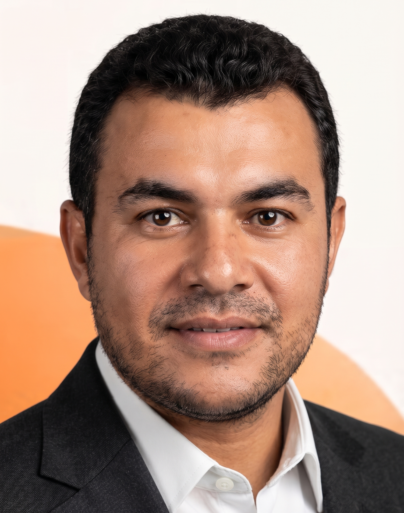

سواء كنت تبحث عن متابعة دقيقة لأمراض الكلى والسكر، أو تحتاج تدخلًا عاجلًا في حالات القصور الكلوي الحاد والتسمم والطوارئ الطبية.

تشخيص وعلاج دقيق للأمراض المزمنة، مع جاهزية كاملة للتعامل الفوري مع الحالات الحرجة وطوارئ الكلى والتسمم.
التعامل الفوري مع حالات القصور الكلوي الحاد وطوارئ الكلى، وتشخيص وعلاج أمراض الكلى المزمنة، ومتابعة مرضى الغسيل الكلوي واضطرابات الأملاح.
متابعة دقيقة ومستمرة لمستويات السكر في الدم، والكشف المبكر وعلاج اعتلال والتهابات الأعصاب السكرية والوقاية من مضاعفات الكلى والقدم السكري.
برامج علاجية حديثة للسيطرة على ضغط الدم المرتفع والحالات الطارئة لارتفاع الضغط، وحماية الكلى وعضلة القلب والأوعية الدموية من أي مضاعفات.
فحص شامل وتقييم دقيق لمختلف أمراض الباطنة للبالغين، اضطرابات الجهاز الهضمي، وعلاج الأمراض المزمنة والحالات العامة.
التميز في التخصص حاجة مش ساهلة خالص! يمتلك د. محمد حمدي البريري خبرة متخصصة رفيعة المستوى في التعامل الفوري مع حالات التسمم المختلفة الطارئة، تقييم السموم الطبية، وتقديم الرعاية الحرجة العاجلة لحالات الطوارئ والقصور الكلوي الحاد وفق أحدث البروتوكولات الطبية العالمية لإنقاذ حياة المرضى.
نوفر أحدث الأجهزة التشخيصية والإجراءات الطبية المتكاملة لخدمة مرضى الكلى والباطنة والسكر في مكان واحد.
تجهيز وتركيب ومتابعة وصلات الغسيل الكلوي (قسطرة الغسيل) بدقة طبية عالية وفق أعلى معايير التعقيم والأمان لمرضى الكلى.
فحص فوري ودقيق للكلى والمسالك البولية والبطن باستخدام أحدث أجهزة الموجات فوق الصوتية (السونار التلفزيوني المتطور) للتشخيص الدقيق.
وحدة متكاملة لتخطيط ورسم القلب الكهربائي لتقييم كفاءة القلب ومتابعة مرضى ارتفاع ضغط الدم والسكري واضطرابات الأملاح والحالات الطارئة.
تقنية Sudoscan الحديثة للكشف المبكر وتقييم التهابات واعتلال الأعصاب الطرفية لمرضى السكر (Diabetic Neuropathy) بدقة وسرعة دون ألم.
من منطلق الرعاية المتكاملة، يقدم د. محمد حمدي أنظمة غذائية أسبوعية مفصلة. اختر النظام المناسب لحالتك واقرأ الإرشادات الطبية بعناية.
للمرضى غير الخاضعين للغسيل الكلوي – نموذج بالغين
تنبيه: لا يوجد نظام واحد يناسب كل مرضى الكلى. تُضبط البروتينات والبوتاسيوم والفوسفور والسوائل حسب الوزن ومرحلة المرض والتحاليل والأدوية.
للمرضى على الغسيل الدموي المنتظم – نموذج بالغين
تنبيه: هذا النظام أعلى في البروتين من نظام ما قبل الغسيل. تُعدّل حصص الطعام والسوائل والبوتاسيوم والفوسفور حسب الوزن الجاف والتحاليل وخطة جلسات الغسيل.
مشاكل الكلى والقصور الكلوي وكيفية اكتشافها مبكرًا
الوقاية من مضاعفات السكر
للحجز والاستفسار تواصل معنا في أقرب فرع إليك، أو تواصل مباشرة مع الطبيب عبر واتساب.
للاستشارات الطبية ومتابعة الحالات الحرجة والتقارير عبر رسائل واتساب فقط (بدون مكالمات).
راسل الطبيب عبر واتساب فقط